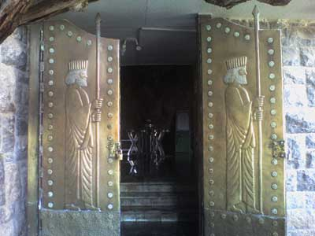

| |
علاوه بر اجرای مناسک و مراسم دینی زرتشتیان در این زیارتگاه، آنچه به میعادگاه دسته جمعی پیر چک چکو رنگ اجتماعی می دهد برخوردها، دید و بازدیدها، میهمانی ها و آشنایی های خانوادگی زرتشتیان است. شمع روشن کردن، دعا خواندن، نذر کردن، سدره پوشی و کستی رستن ( رشته ای که از 72 نخ پشمی تابیده شده و سه بار دور کمر زرتشتیان توسط موبد بسته می شود) از جمله مناسک اجرایی زرتشتیان در این زیارتگاه است. در این محل ساختمان ها و آب انبارهایی ساخته شده که قدیمی ترین آنها مربوط به دوره ناصرالدین شاه قاجار می باشد .
داخل این زیارتگاه تعدادی ظرف برای جمعآوری قطرههای آب که از صخره فراز آن میچکد، گذاشته شده تا این آب به عنوان تبرک مصرف شود .
معبد " پیر سبز " از امکانات رفاهی مانند برق و آب آشامیدنی نیز برخوردار است .
این مکان از مهم ترین و مشهور ترین زیارتگاههای ایران و جهان است و هر ساله توریست و گردشگران زیادی از آن دیدن می کنند. بسیاری از زرتشتیان کشورهای اطراف ( هند - پاکستان - تاجیکستان و . . . ) هر ساله در مراسم این زیارتگاه شرکت می کنند . این مراسم از 24 تا 28 خرداد هر سال برابر با روز اشتاد تا انارم از ماه خورداد باستانی اجرا می گردد .

بازگشت |
|

آتشکده پیر سبز ، از مهم ترین و مشهور ترین زیارتگاه های ایران و جهان است که هر ساله توریست و گردشگران زیادی از آن دیدن می کنند.
زیارتگاه " پیر سبز یا نیک بانو " که نام دیگر آن چک چکو است در فاصله 65 کیلومتری شمال غرب یزد در دامنه کوهی آهکی به نام " چک چک " قرار دارد . گفته می شود نام " چک چک " یا " چک چکو " از صدای قطره های آبی گرفته شده که از صخره ای می چکد و به درون یک منبع ذخیره هدایت می شود .
تعدادی اتاق و چند صفه در این منطقه وجود دارد که به خیله معروف است و بر سر هر بنا شعار پندار نیک، گفتار نیک و کردار نیک توجه هر بیننده ای را به خود جلب می کند. در داخل یکی از اتاق های " پیر سبز " چاهی به عمق بیش از 50 متر وجود دارد که زرتشتیان با نیت برآورده شدن حاجتشان، نخی را بر دور طناب این چاه گره می زنند .
در قسمت دیگر معبد درخت کهنسالی وجود دارد که به اعتقاد زرتشتیان این درخت عصای " نیک بانو " دختر یزد گرد آخرین پادشاه ساسانیان است که پس از فرورفتن در زمین به درخت بزرگی تبدیل شده است. زرتشتیان در این محل، در شبانه روز پنج نوبت رو به روشنایی نماز می خوانند و با " اهورامزدا " راز و نیاز می کنند .
|
|